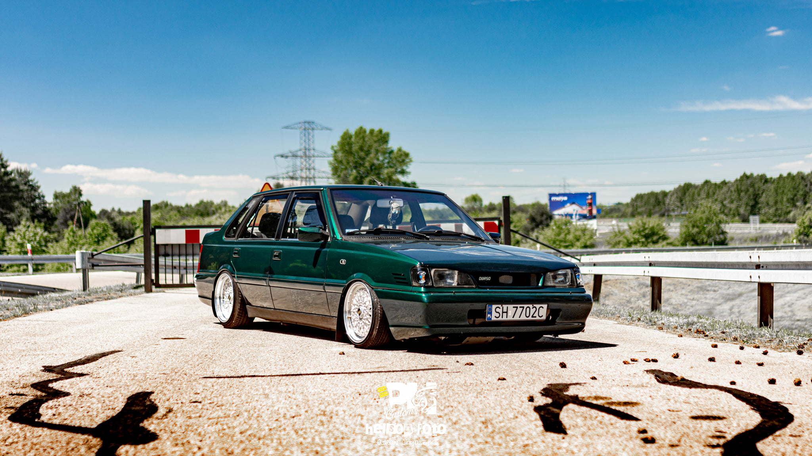
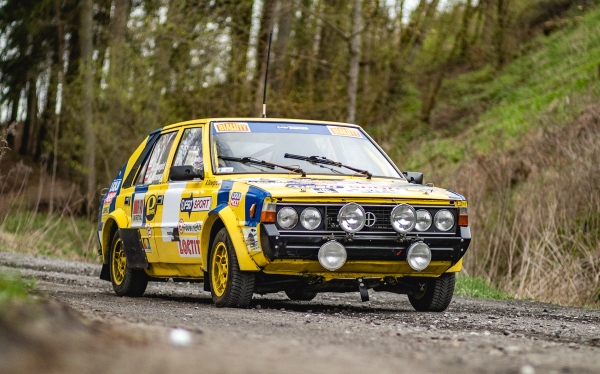
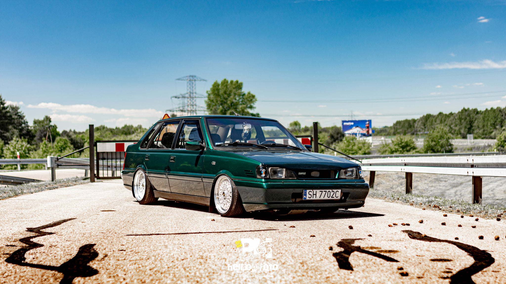
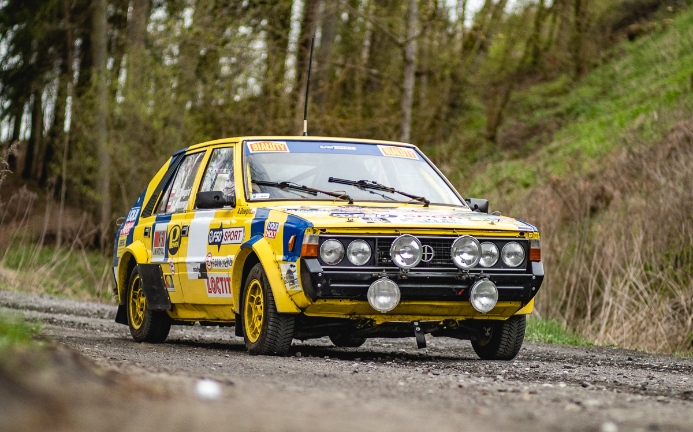
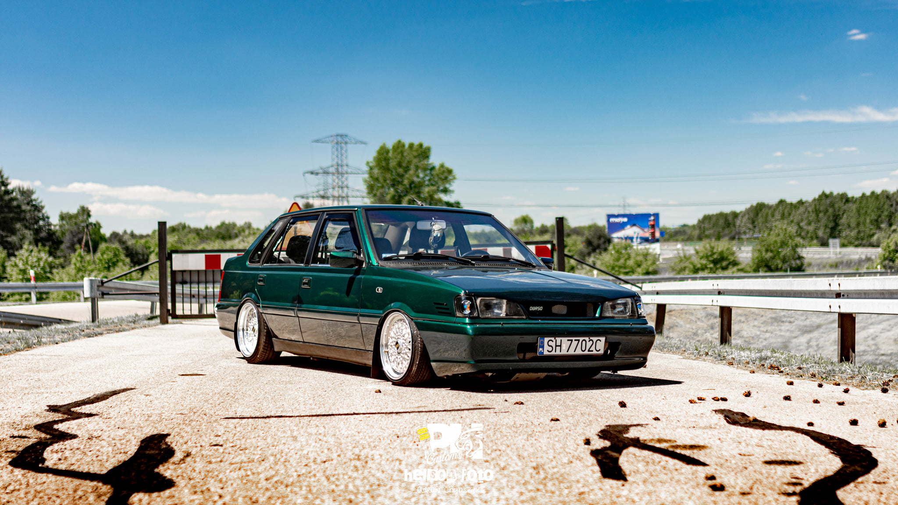
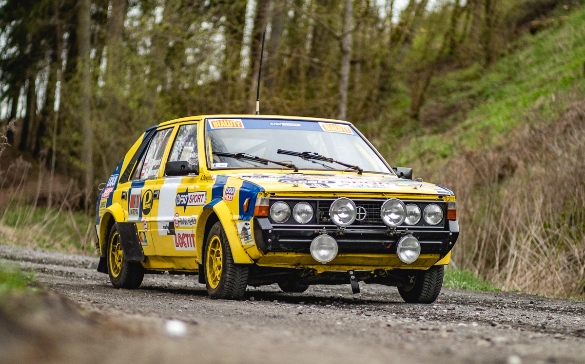

Polonez
Polonez był nowoczesnym jak na swoje czasy modelem, produkowanym od 1978 roku. Był synonimem innowacji i stylu, a jego unikalny design przyciągał wzrok na polskich drogach.
 



Polonez był nowoczesnym jak na swoje czasy modelem, produkowanym od 1978 roku. Był synonimem innowacji i stylu, a jego unikalny design przyciągał wzrok na polskich drogach.

